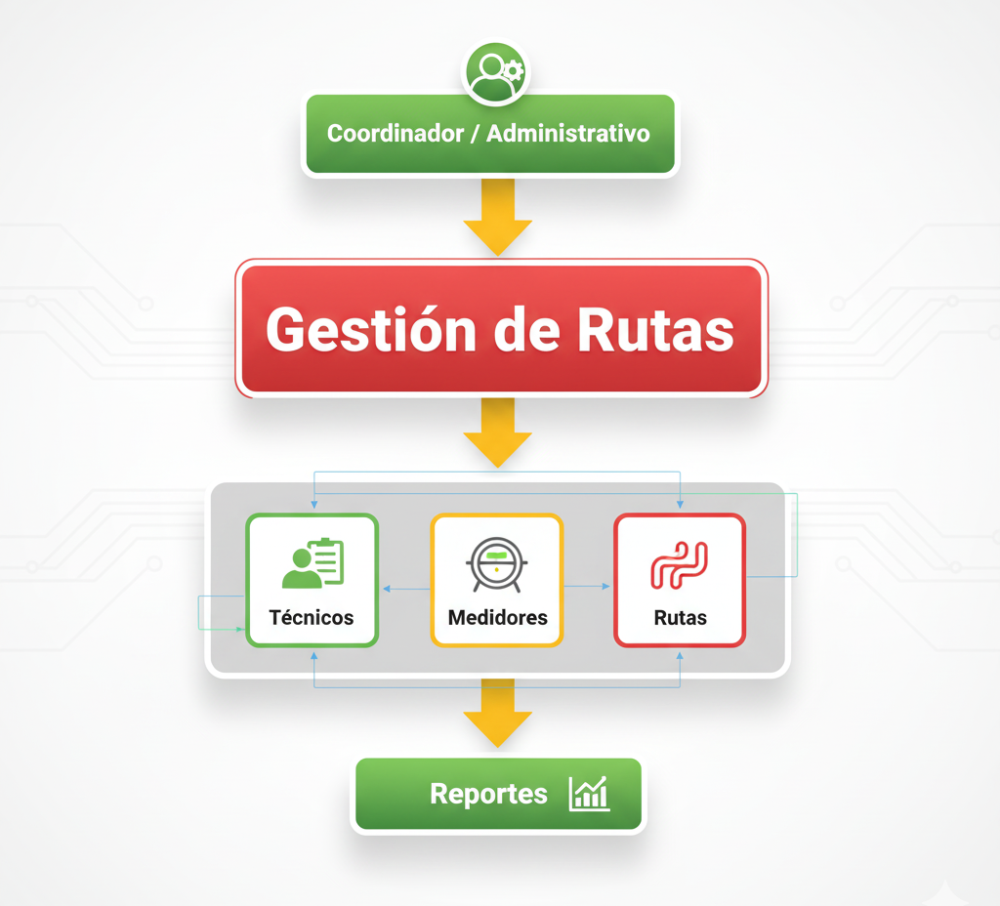

Arquitectura del Sistema
Vista conceptual del funcionamiento y módulos principales.
Arquitectura Conceptual
El sistema se organiza en módulos que permiten planificar, asignar y supervisar rutas de técnicos por zona.

*Diagrama conceptual del sistema (no técnico)*
Módulos del Sistema

Gestión de Técnicos
Consulta de técnicos disponibles y registro de su estado.

Gestión de Medidores
Visualización de medidores activos y pendientes por zona.

Rutas
Creación, validación y propuesta de rutas optimizadas.

Asignación de Rutas
Asignación de rutas al técnico correspondiente.

Reportes
Reportes de cumplimiento y avance por zona o técnico.